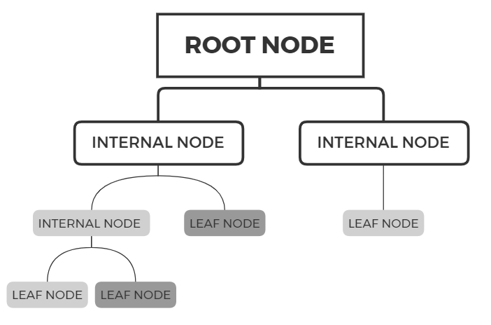
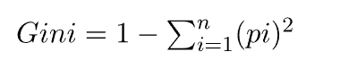
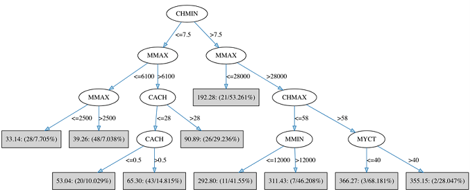
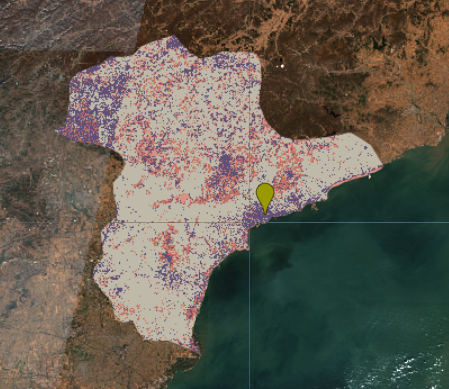
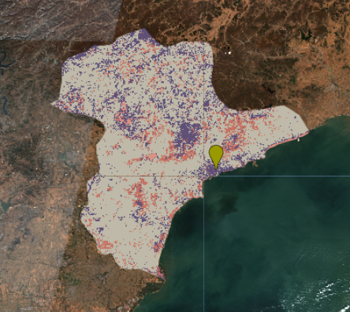
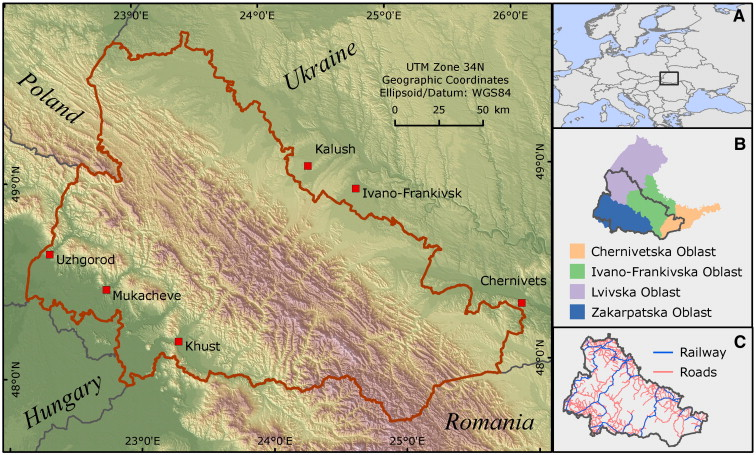
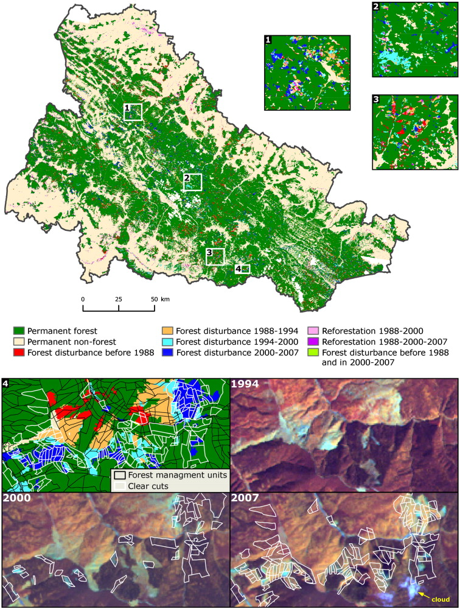
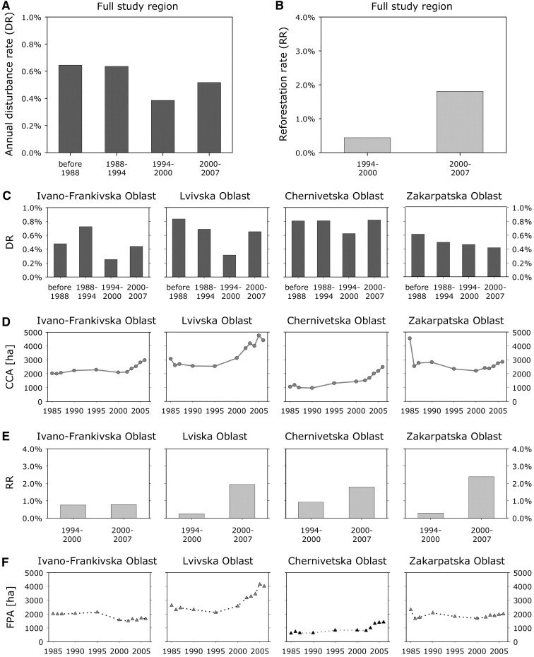

6 Classification
6.1 Summary
This study is an introduction to CART and its application to remote sensing to solve real urban problems. In practice, I use a supervised learning approach to extract eo data to classify land cover and make a first working task for subsequent analysis such as illegal logging.
6.1.1 CART
CART is a predictive algorithm used in Machine learning and it explains how the target variable’s values can be predicted based on other matters. It is a decision tree where each fork is split into a predictor variable and each node has a prediction for the target variable at the end.
Following process

- The best split point of each input is obtained.
- Based on the best split points of each input in Step 1, the new “best” split point is identified.
- Split the chosen input according to the “best” split point.
- Continue splitting until no further desirable splitting is available.
6.1.1.1 CART Algorithm
CART algorithm uses Gini Impurity to split the dataset into a decision tree .It does that by searching for the best homogeneity for the sub nodes, with the help of the Gini index criterion.
This is the prototype formula.

The degree of the Gini index varies from 0 to 1.
Gini=0, all the elements are allied to a certain class, or only one class exists there
Gini=1, all the elements are randomly distributed across various classes
Gini=0.5, the elements are uniformly distributed into some classes.
In the example “Does someone who loves popcorn or soda love the song cool as ice?”- explained in the lesson, when there is no clear yes or no outcome, then the probabilities of the two choices are calculated and the probabilities of yes and no are brought into the Gini index formula, and if the Gini index is less than 0.5, then it is classified as “yes”.
- Restriction
Because it provides outcomes either “successful” or “failure” and hence conducts binary splitting only and works on categorical variables.
6.1.1.2 CART Types
6.1.1.2.1 Classification tree
The target variable of the classification tree is categorical. Classification trees are used when the dataset needs to be split into classes that belong to the response variable(like yes or no).
I learned about this is a classification example when filtering emails “spam” or “not spam”, when looking at transaction data, “fraudulent”, or “authorized”.
6.1.1.2.2 Regression tree
The target variable is continuous and the tree is used to predict its value. Regression trees are used when the response variable is continuous.
For example, we can predict future house prices based on the existing house price dataset.
I learned about a case study for analysing the performance of the computer.Here are four attributes relating to main memory: cycle time (MYCT), minimum memory (MMIN), maximum memory (MMAX) and cache (CACH); there are also two attributes relating to channels: minimum channels (CHMIN) and maximum channels (CHMAX). Finally, there is the target: relative performance (PRP).

The importance of attributes with respect to predicting the target is reflected in the level at which they are tested within the tree. Therefore, the most predictive attribute is the MMAX in this case.
6.1.1.2.3 Difference between the decision and regression tree
| Decision Tree | Regression Tree | |
|---|---|---|
| Dataset selected | Either uncontinous or continous data | must be continous data |
| How to divide the tree | Find segments with a strong majority of a discrete class label | Employ splitting metrics based on variance reduction |
| Goal | Classification | Predicting the value |
6.1.1.3 CART Assessment
1.Advantages of CART
Results are simplistic.
Classification and regression trees are Nonparametric and Nonlinear.
Outliers have no meaningful effect on CART.
2.Limitations of CART
- Overfitting
Overfitting occurs when the tree takes into account a lot of noise that exists in the data and comes up with an inaccurate result.
- High Variance
a small variance in the data can lead to a very high variance in the prediction, thereby affecting the stability of the outcome.
- low bias
A decision tree that is very complex usually has a low bias. This makes it very difficult for the model to incorporate any new data.
How to tackle the overfitting of the desicion tree?
reason:the model will correctly classify each and every example if we don’t stop splitting! The training accuracy is 100%
resolution: + Pruning
It is a technique to remove the parts of the decision tree to prevent growing to its full depth.
- Radom Forest
It is a technique for classification and regression by bootstrapping multiple decision trees to prevent overfitting and the random forest can improve the accuracy of the decision tree.
Through watching the vedio, I learned about the approach of the random forest.
1.Create a bootstrapped dataset
2.Creat a decision tree using the bootstrapped dataset, but only use a random subset of variabled at each step
3.Go back to the step 1 and repeat and will construt a wide variety of trees. The random forest is construted
4.The new data will be input. And the variables will be run down every decision tree,and we can keep track the more votes that is the result of the random forest.
6.1.1.4 GEE Practical
I choose Qinhuangdao city, my hometown, as the study area. After loading the EO data and pre-processing, I choose classify the landcover into water,urban,grass,farm and forest, and make a featurecolection.
// Make a FeatureCollection from the polygons
var polygons = ee.FeatureCollection([
ee.Feature(water, {'class': 1}),
ee.Feature(urban, {'class': 2}),
ee.Feature(grass, {'class': 3}),
ee.Feature(farm, {'class': 4}),
ee.Feature(forest, {'class': 5}),]);
// Use these bands for classification.
var bands = ['B2', 'B3', 'B4', 'B5', 'B6', 'B7'];
var classProperty = 'class';
// Sample the composite to generate training data.
var training = waytwo_clip.select(bands).sampleRegions({
collection: polygons,
properties: [classProperty],
scale: 10
});
print(training, "training")And I use the CART to classify the image. But it is the basic methods which doesn’t a good accuracy.
// Train a CART classifier.
var classifier = ee.Classifier.smileCart().train({
features: training,
classProperty: classProperty,
});
// Print some info about the classifier (specific to CART).
print('CART, explained', classifier.explain());
// Classify the image.
var classified = waytwo_clip.classify(classifier);
Map.centerObject(qinhuangdao);
Map.addLayer(classified, {min: 1, max: 5, palette: ['d99282', '466b9f', 'ab0000', 'dfdfc2', 'b3ac9f', '1c5f2c']}, "classified");
In order to improve the accuracy of the image, I used the random forest to classification using the picel approach .
var pixel_number= 1000;
var water_points=ee.FeatureCollection.randomPoints(water, pixel_number).map(function(i){
return i.set({'class': 1})})
var urban_points=ee.FeatureCollection.randomPoints(urban, pixel_number).map(function(i){
return i.set({'class': 2})})
var grass_points=ee.FeatureCollection.randomPoints(grass, pixel_number).map(function(i){
return i.set({'class': 3})})
var farm_points=ee.FeatureCollection.randomPoints(farm, pixel_number).map(function(i){
return i.set({'class': 4})})
var forest_points=ee.FeatureCollection.randomPoints(forest, pixel_number).map(function(i){
return i.set({'class': 5})})
var point_sample=ee.FeatureCollection([water_points,
urban_points,
grass_points,
farm_points,
forest_points])
.flatten()
.randomColumn();
// assign 70% of training points to validation
var split=0.7
var training_sample = point_sample.filter(ee.Filter.lt('random', split));
var validation_sample = point_sample.filter(ee.Filter.gte('random', split));
// take samples from image for training and validation
var training = waytwo_clip.select(bands).sampleRegions({
collection: training_sample,
properties: ['class'],
scale: 10,
});
var validation = waytwo_clip.select(bands).sampleRegions({
collection: validation_sample,
properties: ['class'],
scale: 10
});
// Random Forest Classification
var rf1_pixel = ee.Classifier.smileRandomForest(100)
.train(training, 'class');
print('Results of RF trained classifier', rf1_pixel.explain());
// Conduct classification
var rf2_pixel = waytwo_clip.classify(rf1_pixel);
Map.addLayer(rf2_pixel, {min: 1, max: 5,
palette: ['d99282', '466b9f', 'ab0000', 'dfdfc2', 'b3ac9f', '1c5f2c']},
"RF_pixel");
// Assess Accuracy
var trainAccuracy = rf1_pixel.confusionMatrix();
print('Resubstitution error matrix: ', trainAccuracy);
print('Training overall accuracy: ', trainAccuracy.accuracy());
var validated = validation.classify(rf1_pixel);
var testAccuracy = validated.errorMatrix('class', 'classification');
var consumers=testAccuracy.consumersAccuracy()
print('Validation error matrix: ', testAccuracy);
print('Validation overall accuracy: ', testAccuracy.accuracy())
print('Validation consumer accuracy: ', consumers);
through both image comparing, I find that the accurancy of classification is improved. Because of observing the urban landcover in the image using the random forest, the urban area locates mainly in coastal areas and urban center.
However, this practical has some limitation.I should classify the landcover more clearly, for emaple, the urban with low density, urban with high density, and moutain etc.
6.1.2 Application
Forest cover change and illegal logging in the Ukrainian Carpathians from 1988 to 2007(Kuemmerle et al. 2009)
This paper focuses that the authors’ use Landsat TM/ETM+ imagery and support vector machines (SVM) to derive forest change trajectories across the Ukrainian Carpathians between 1988 and 2007. By mapping forest cover changes and assessing the extent of illegal logging and reforestation in the Ukrainian Carpathians. As a result of the study, the authors found that a general change in forest cover occurred in the Ukrainian Carpathians between 1988 and 2007, mainly in the form of forest decline in the interior of the Carpathians.
- Study area: The entire Ukrainian Carpathians

- Data collection
1.EO data:19 mid-summer and early fall Landsat TM and ETM+ images for ∼ 1988, 1994, ∼ 2000, and ∼ 2007. what’s more，to account for relief displacement, we included the Space Shuttle Topography Mission (SRTM) digital elevation model, resampled to 30 m.
2.Ground truth data were gathered based on approximately 120 Quickbird images from 2002 to 2007 available in Google Earth, which is comparable to that of the Landsat images. 3.Administrative boundaries at the province (oblast) and district (raion) level were digitized from topographic maps at a scale of 1:100,000 .
Methodology: The author used SVM to create forest/non-forest maps for each of the four time periods and assessed forest cover change by comparison of the post-classification maps. After finding the best γ and C, the author classified each of the 19 Landsat TM/ETM+ images according to six multispectral bands. the author divided all available ground truth points into training (90%) and validation (10%) samples. the author classify each image 10 times for all 10 possible segmentations, derive an accuracy metric and then calculate an average error estimate.
Output:Forest cover changed substantially in the Ukrainian Carpathians between 1988 and 2007.What’s more, compared with the official forest resource data at the oblast level,The forest cover trends mapped from Landsat imagery differ markedly. Based on official statistics recorded in the Statistical Yearbook of Ukraine, it was found that the relatively high disturbance rates found in the Lvivska and Chernivetska Oblasts prior to 1994 and the significant increase in disturbance rates in the Ivano-Frankivska Oblast after 1988 were not depicted in the forest resource data.


Comment
The authors chose svm as the analysis method, which can better handle large-scale datasets and has the ability to handle complex data, making it a better analysis method for monitoring image classification such as illegal logging activities in forest areas. The authors also consider the influence of population activity and DEM on forest monitoring disturbances with rigour. However, in this article, large-scale natural disturbances are not taken into account, such as more frequent storms in the local area, or insect infestations, which can bias the data analysis results to some extent.
6.1.3 Reflection
Through this week, I have learnt about the power of machine learning in the field of remote sensing, especially in land cover classification. And through extra-curricular literature reading and practical application, I realised the wide application of random forests. Firstly, random forests can handle the high-dimensional data contained in remote sensing data, and it has strong stability to avoid the drawbacks of over-fitting simple classification trees.
In addition, in reviewing the data, he found that land cover classification can also be performed by deep learning methods. He trained a deep neural network for classification through a large amount of data. In remote sensing image classification, deep learning can use convolutional neural networks (CNNs) to extract and classify spatial features in images. This is an area that I am not currently exposed to and have developed an interest in myself, so I hope to learn something about it later.